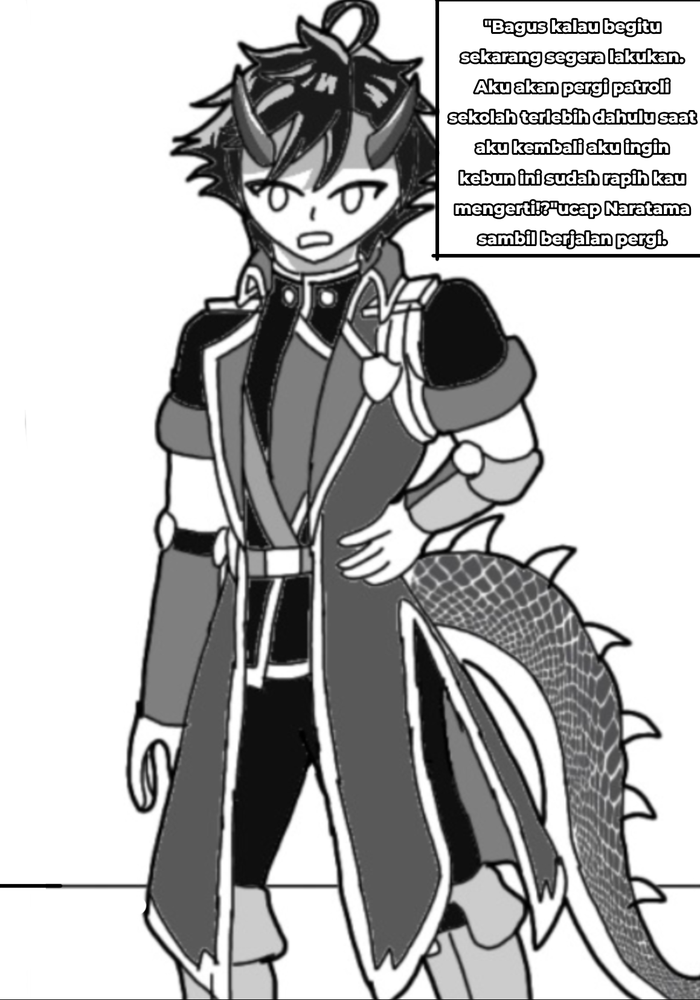
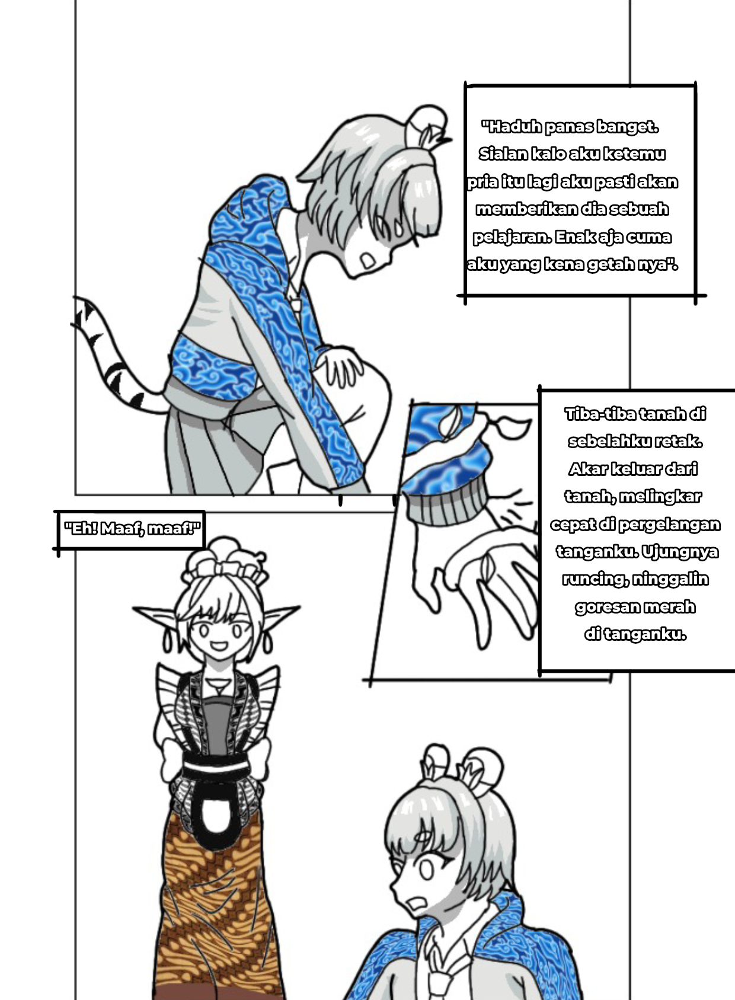

7 Kilauan Pelangi
Petualangan Zia Putri di Pandawa Akademi dimulai di sini. Bersiaplah untuk 7 kristal, 7 kesatria, dan 7 rahasia yang mengubah segalanya.
Chapter 3: Hukuman Kebun & Si Kembar Sri-Sari
*Untuk suara Bahasa Indonesia terbaik, buka di Chrome Android Atau Cari Suara Indonesia
"Angkat tangan dan jangan melawan!" Teriak salah satu anggota OSIS.
Aku mengangkat kedua tanganku. Jantungku berdebar kencang saat itu. Semua murid keluar dari kamar mereka menatapku seolah aku sudah melakukan sebuah kejahatan.
"Kapten Naratama, kita apakan wanita ini? Kita interogasi atau langsung kurung saja dia di ruang referensi?"
"Serahkan dia kepadaku," ucap Naratama.
"Jadi pria itu bernama Naratama ya," gumamku di dalam hati.
Naratama maju dan menatapku dengan tatapan yang tajam. "Apa yang kau lakukan membuat keributan di asrama tengah malam begini, hah?"
"Aku tadi diserang oleh sekelompok bayangan hitam. Lalu pria ini datang menyelamatkanku dan kami berdua bekerja sama untuk menyingkirkan mereka."
Naratama menarik napas. "Pria yang mana, hah? Di belakangmu tidak ada siapa-siapa. Lihatlah!"
Aku membalikkan tubuhku. Lalu aku terkejut karena ternyata benar, pria misterius tersebut sudah menghilang entah kemana.
Dalam kepanikan aku mencoba menjelaskan pada Naratama, "S-sumpah aku gak bohong! Tadi dia ada di belakangku!"
Dilihat dari ekspresinya, sepertinya dia sama sekali tidak percaya padaku.
"Zia Putri, besok siang temui aku di kebun belakang sekolah," ucap Naratama tegas.
Tanpa dia menjelaskan apapun, aku sudah yakin aku pasti akan diberi hukuman. Aku kembali ke kamarku.
Lalu Nirmala bertanya padaku, "Hey Zia, apa yang terjadi?"
Aku langsung tersungkur ke tempat tidur. "Besok saja deh aku ceritanya. Aku udah capek banget hari ini."
"Oh yaudah kalo gitu," ucap Nirmala.
"Hah, kenapa hal ini selalu terjadi padaku?" Gumamku dalam hati.
Keesokan harinya, pukul 09.30, Naratama sudah berdiri di kebun belakang sekolah.
"Bagus, kau datang tepat waktu. Sekarang tugasmu adalah membersihkan kebun belakang sekolah ini. Kau mengerti?"
Aku menghembuskan nafas. "Iya, aku ngerti!"

Naratama, Kapten OSIS bertanduk merah
Dengan nada kesal aku berkata, "Iya iya aku ngerti, bawel amat sih jadi orang."
Beberapa menit berlalu, cuacanya semakin panas.
"Haduh, panas banget. Sialan. Kalo aku ketemu pria itu lagi, aku pasti akan memberikan dia sebuah pelajaran. Enak aja cuma aku yang kena getahnya."
Tiba-tiba tanah di sebelahku retak. Akar keluar dari tanah, melingkar cepat di pergelangan tanganku. Ujungnya runcing, meninggalkan goresan merah di tanganku.

Sari, gadis berkebaya putih penjinak akar
"Eh! Maaf, maaf!" Seorang gadis berkebaya putih datang menghampiriku. Dia mengulurkan tangannya dan seketika itu juga akar yang mengikat tanganku langsung lepas. "Akar Kak Sri emang galak kalo ada orang asing datang ke kebun. Kayaknya kamu kecapean, sini biar aku bantu cabut rumputnya."
"SARI!"
Bentakan itu membuat bulu kudukku berdiri. Gadis berkebaya merah muncul, matanya menatap ke arah kami berdua. "Lepasin akar lo. Udah berapa kali gue bilang jangan ikut campur urusan orang lain!"
Sari cemberut. "Emangnya kenapa, Sri? Kok kamu selalu ngatur-ngatur aku sih? Dia lagi susah, wajar dong kalo aku ngebantu dia!"
"UDAH CUKUP, SARI! Kembali ke kantin. Sebentar lagi waktunya makan siang."
Sari menghela nafas. "Maaf ya, aku cuma bisa bantu segini aja."
"Oh ya gak papa kok. Justru aku yang harus bilang makasih ke kamu."
Lalu mereka pun pergi meninggalkan ku sendiri di halaman belakang sekolah. Tak lama kemudian Naratama kembali.
Naratama terkejut. "Waw, aku gak nyangka kamu sehebat ini dalam hal bersih-bersih."
"Gimana, udah beres kan hukumanku? Aku udah boleh pergi sekarang kan?"
Naratama mengangguk. "Ya, kau bisa pergi sekarang."
Aku menghembuskan nafas lega. "Akhirnya beres juga."
Beberapa saat kemudian aku kembali ke asrama dan melihat penjaga asrama. Aku jadi ngerasa gak enak atas apa yang terjadi kemarin malam.
Lalu ibu penjaga asrama menoleh dan melihat ke arahku. "Halo Dek Manis, ada apa? Ko keliatannya capek banget?"
"Eh iya, Bi. Tadi abis dihukum sama OSIS disuruh bersihin kebun belakang sekolah."
Aku menundukkan kepala. "Maaf ya, Bi, soal yang terjadi tadi malam."
Dia tersenyum ramah padaku. "Gak papa, Dek Manis. Jujur, tragedi seperti itu sudah sering terjadi. Semenjak kekeringan melanda daerah ini..."
Di perjalanan menuju kamarku, aku masih memikirkan apa yang dikatakan oleh ibu tadi. "Sebenarnya apa yang sedang terjadi di sekolah ini? Ah, sudahlah. Aku lagi capek gini, udah gaada tenaga lagi buat mikirin yang begituan."
Sesampainya di kamar, aku langsung tersungkur ke kasurku. Aku sudah sangat kelelahan hingga secara tidak sadar aku langsung tertidur pulas.
Naratama OSIS galak, tapi kayaknya nggak jahat. Sri-Sari kembar kebun belakang? Dan "kekeringan melanda daerah ini" - nyambung sama ramalan Raksasa Pembawa Bencana! LANJUT CHAPTER 4 👇
Traktir Kopi Biar Melek ☕